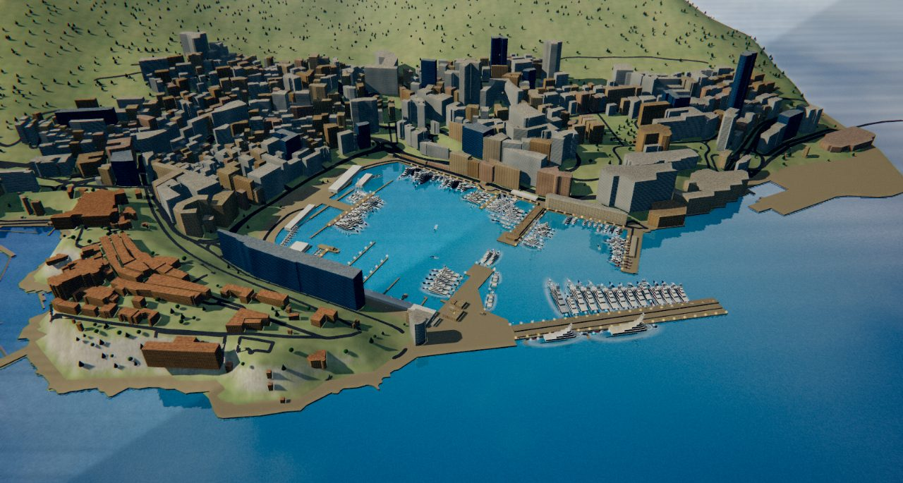
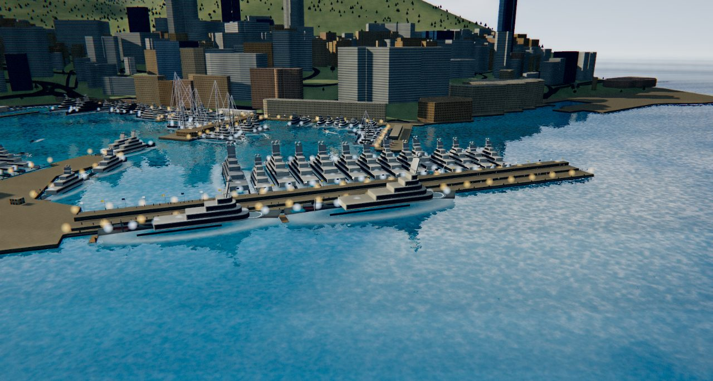
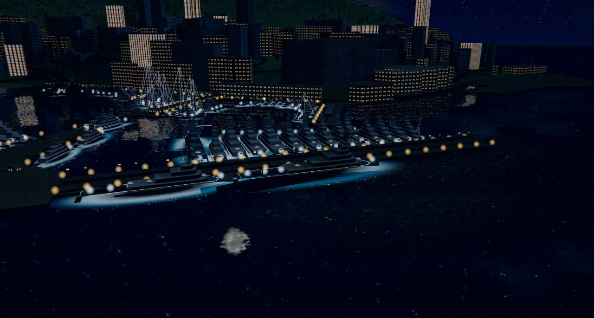
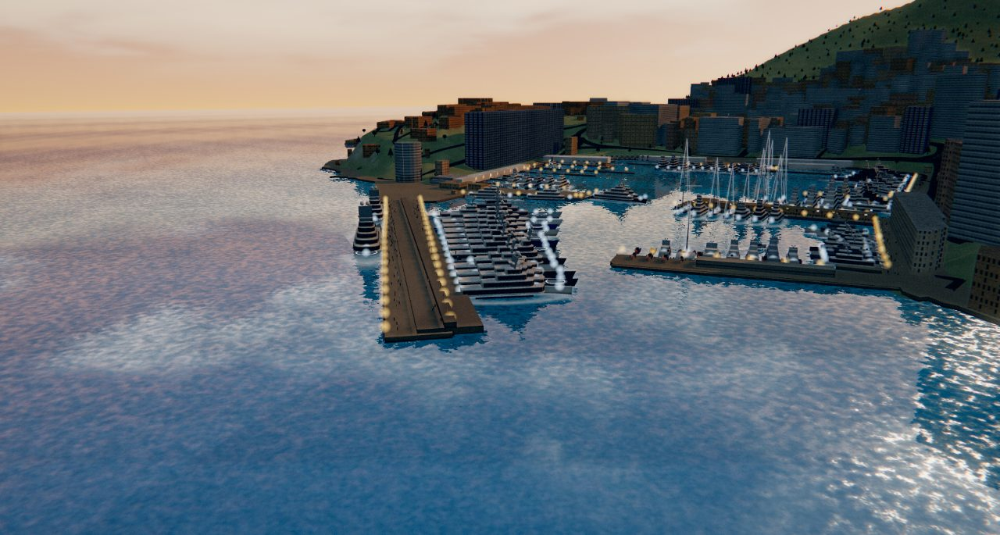
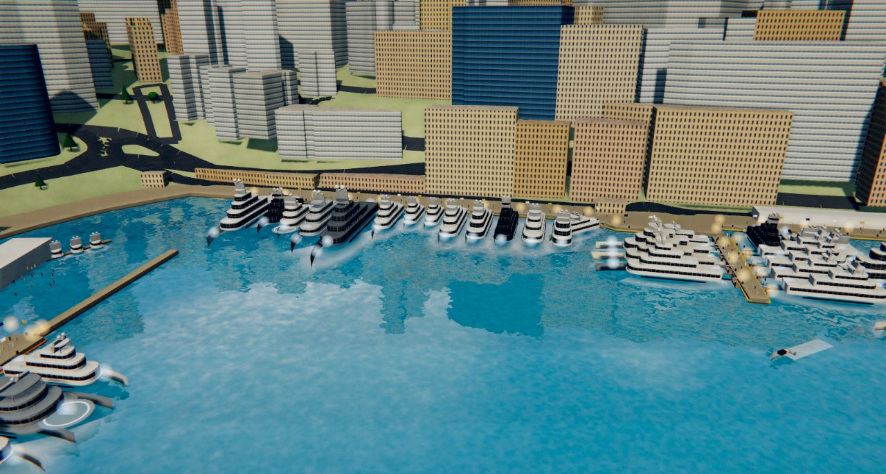
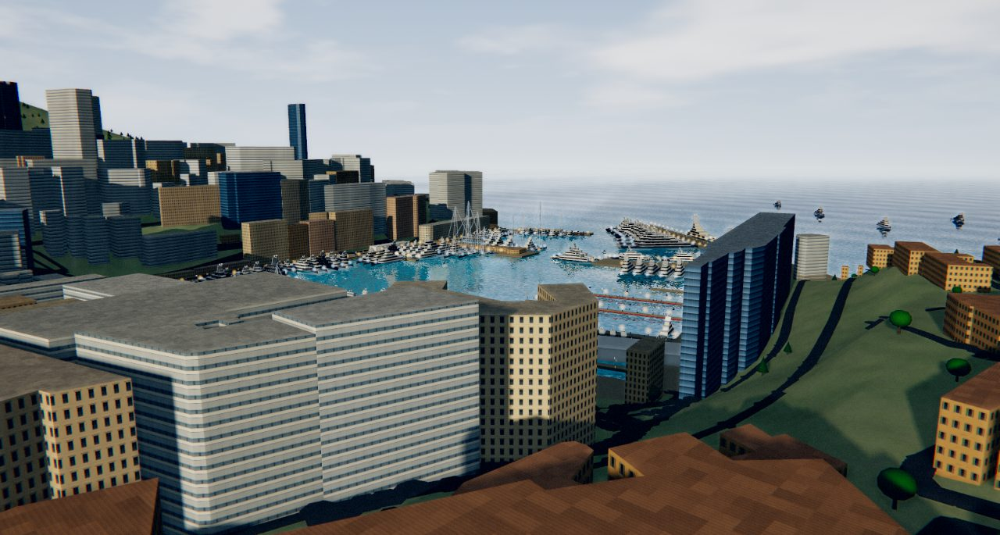
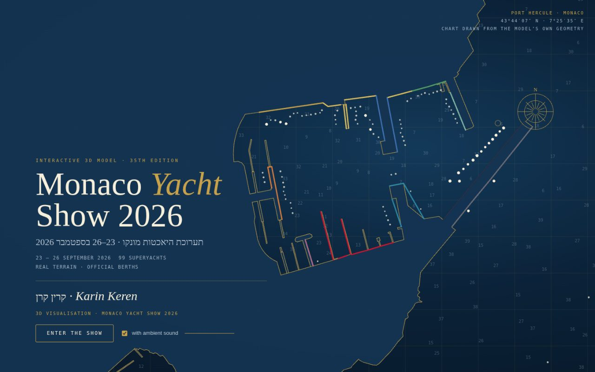

מודל תלת־ממדי אינטראקטיבי · נמל הרקול · מונקוInteractive 3D model · Port Hercule · Monaco
בניתי את תערוכת היאכטות של מונקו 2026 בתלת־ממדI built the Monaco Yacht Show 2026 in 3D
99 יאכטות־על, כל אחת באורך ובמקום העגינה שפורסמו לה, על גבי הטופוגרפיה והבניינים האמיתיים של מונקו. אפשר לטוס מעל הנמל, לרדת לרציף וללכת בין הסירות, ולהזיז את השעה מהבוקר ועד הלילה.99 superyachts, each at its published length and berth, laid over the real terrain and buildings of Monaco. Fly over the harbour, step down to the quay and walk between the boats, and move the clock from morning to night.
תכנון, מחקר ובנייה של המודל · ספטמבר 2026Concept, research and build · September 2026
Port Hercule · 43°44′N 7°25′Eלוח 1 · מבט עלPlate 1 · Overview

נמל הרקול מהאוויר · 15:30 ביום התערוכהPort Hercule from the air · 15:30 on show dayרינדור מתוך המודלRendered from the model
99
יאכטות־על במודלsuperyachts modelled
85
מהרשימה הרשמית של התערוכהfrom the official show list
111 m
הגדולה ביותר · Leviathanlargest hull · Leviathan
28
קודי עגינה רשמייםofficial berth codes placed
863
בניינים אמיתיים של מונקוreal Monaco buildings
10 m
רזולוציית הטופוגרפיהterrain resolution
מה זהWhat it is
הנמל, הסירות והשעה, כפי שהם באמתThe harbour, the boats and the hour, as they really are
תערוכת היאכטות של מונקו נפתחת ב־23 בספטמבר 2026 בנמל הרקול, למשך ארבעה ימים. המודל הזה מציג את התערוכה לפני שהיא מתחילה: איפה כל יאכטה תעמוד, כמה היא גדולה לעומת שכנותיה, ואיך נראה הנמל מהרציף ומהאוויר.The Monaco Yacht Show opens on 23 September 2026 in Port Hercule and runs four days. This model shows the show before it starts: where each yacht will lie, how big she is against her neighbours, and how the harbour looks from the quay and from the air.
כל מה שרואים כאן נבנה מנתונים אמיתיים. קו החוף, הרציפים והבניינים נלקחו ממפת OpenStreetMap של מונקו, והטופוגרפיה מנתוני גובה לווייניים ברזולוציה של 10 מטרים, כך שהסלע של מונקו־ויל, המדרונות של מונטה־קרלו והדיג רנייה השלישי יושבים במקומם ובגובהם.Everything here is built from real data. The coastline, quays and buildings come from the OpenStreetMap map of Monaco, and the terrain from satellite elevation data at 10-metre resolution, so Le Rocher, the slopes of Monte-Carlo and the Digue Rainier III sit where they are and at their true height.
הצי הורכב מהרשימה הרשמית של התערוכה ומהודעות של מספנות, ברוקרים ועיתונות מקצועית, נכון ל־13 בספטמבר 2026. כל יאכטה משורטטת לפי האורך הכולל, הרוחב והסוג שפורסמו לה, ומעוגנת לפי קוד העגינה הרשמי כשהוא פורסם: D לרציף רנייה השלישי, E לרציף ארצות־הברית, C לרציף השיקאן, S למזח ז׳ול סוקאל ועוד.The fleet is compiled from the official show list plus shipyard, broker and trade-press announcements as of 13 September 2026. Every yacht is drawn to her published length overall, beam and type, and moored by her official berth code where one was published: D for Quai Rainier III, E for Quai des États-Unis, C for Quai Chicane, S for the Jules Soccal pier, and so on.
האור עוקב אחרי השמש האמיתית של מונקו בסוף ספטמבר. מזיזים את השעון ורואים את הנמל בבוקר, בשעת הזהב, בדמדומים ובלילה, כשהחלונות של מונטה־קרלו נדלקים והיאכטות מאירות את המים מתחתן.The light follows Monaco's real sun path for late September. Move the clock and see the harbour at morning, golden hour, dusk and night, when the windows of Monte-Carlo come on and the yachts light the water beneath them.
לוחותPlates
שש נקודות מבט, שעות שונות ביוםSix viewpoints, different hours of the day
כל התמונות רונדרו ישירות מתוך המודל, במצב צילום. במודל עצמו אפשר להסתובב חופשי, להתקרב לכל יאכטה וללחוץ עליה כדי לקרוא עליה.All images are rendered straight from the model in photo mode. In the model itself you orbit freely, zoom to any yacht and click her to read her card.
Quai Rainier III · 17:24

הדיג רנייה השלישי אחר הצהריים · היאכטות הגדולות ביותרDigue Rainier III, late afternoon · the flagship berthsלוח 2Plate 2Quai Rainier III · 21:24

אותו רציף בלילה · חלונות מונטה־קרלו ואורות הסיפוןThe same quay at night · Monte-Carlo windows and deck lightsלוח 3Plate 3Harbour entrance · 19:12

פתח הנמל בדמדומים · מהים פנימהThe harbour entrance at dusk · looking in from the seaלוח 4Plate 4Quai des États-Unis · 12:30

רציף ארצות־הברית בצהריים · עגינה בירכתיים אל הרציףQuai des États-Unis at noon · stern-to along the quayלוח 5Plate 5Le Rocher · 17:48

מהסלע של מונקו־ויל · מעל הגגות אל הנמלFrom Le Rocher · over the rooftops to the harbourלוח 6Plate 6מסך הפתיחהOpening screen

מסך הפתיחה · מפה ימית שמשורטטת מהגיאומטריה של המודל עצמוOpening screen · a chart drawn from the model's own geometryלוח 7Plate 7
מקראLegend
מה יש בתוך המודלWhat the model does
כל רכיב נכתב במיוחד לפרויקט הזה: מחולל היאכטות, המים, השמיים, האור, הסאונד והממשק. אין כאן מנוע משחק מוכן.Every part was written for this project: the yacht generator, the water, the sky, the lighting, the sound and the interface. There is no off-the-shelf game engine underneath.
מחולל יאכטותYacht generator
כל גוף נבנה מהמידות שפורסמו: אורך, רוחב, סוג, מספר סיפונים, צבע גוף, מנחת מסוקים, בריכה או תורן. מנועית, מפרשית, אקספלורר וקטמרן.Each hull is lofted from published figures: length, beam, type, deck count, hull colour, helipad, pool or rig. Motor, sail, explorer and catamaran.
מים והשתקפויותWater and reflections
המים משקפים את היאכטות, הבניינים והשמיים בזמן אמת, עם גלים קטנים, קצף סביב הגופים ואור שנשבר על פני השטח.The water reflects yachts, buildings and sky in real time, with small waves, foam around the hulls and light breaking on the surface.
שעון שמשSun clock
מסלול השמש מחושב לקו הרוחב של מונקו ולתאריך התערוכה. גוררים את השעון מ־07:00 עד 22:30 והאור, הצללים, הערפל והשמיים משתנים איתו.The sun path is computed for Monaco's latitude and the show date. Drag the clock from 07:00 to 22:30 and the light, shadows, haze and sky follow.
הליכה על הרציףWalk the quay
במצב הליכה יורדים לגובה העיניים וצועדים לאורך הרציפים, בין הירכתיים של היאכטות, עם מקלדת או ג׳ויסטיק על המסך.Walk mode drops you to eye level on the quays, between the sterns of the yachts, with keyboard or on-screen joystick.
כרטיס לכל יאכטהA card for every yacht
לחיצה על יאכטה פותחת את הכרטיס שלה: מספנה, שנה, אורך, רוחב, רציף, קוד עגינה ומקור המידע. חיפוש וסינון לפי גודל, סוג ובכורות.Click a yacht for her card: builder, year, length, beam, quay, berth code and the source. Search and filter by size, type and debuts.
סאונד, סיור וצילוםSound, tour and photo
רחש מים ורוח שנוצרים בזמן אמת, סיור מצולם שעובר בין נקודות המבט, ומצב צילום שמסתיר את הממשק לתמונה נקייה.Ambient water and wind generated live, a guided tour between viewpoints, and a photo mode that hides the interface for a clean frame.
איך משתמשיםHow to use it
פותחים בדפדפן, בלי התקנהOpens in the browser, nothing to install
עובד במחשב ובטלפון. במחשב חוויה מלאה עם השתקפויות; בטלפון מומלץ לסובב לרוחב. הטעינה הראשונה לוקחת כמה שניות כי הנמל כולו נבנה על המכשיר שלכם.Works on desktop and phone. Desktop gets the full experience with reflections; on a phone, landscape is best. The first load takes a few seconds because the whole harbour is built on your device.
סיבוב וזוםOrbit and zoom
גוררים כדי להסתובב, גלגלת או צביטה כדי להתקרב, לחיצה ימנית או שתי אצבעות כדי להזיז.Drag to orbit, scroll or pinch to zoom, right-drag or two fingers to pan.
נקודות מבטViewpoints
כפתורי המבט בצד קופצים לדיג, לרציף ארצות־הברית, לסלע ולפתח הנמל.The view buttons jump to the Digue, Quai des États-Unis, Le Rocher and the harbour entrance.
שעהHour
הסליידר למעלה מזיז את השעה ביום התערוכה. כפתור Night קופץ ישר ללילה.The slider at the top moves the hour on show day. The Night button jumps straight to night.
קישור ליאכטהLink to a yacht
כל יאכטה מקבלת קישור משלה, למשל #yacht=Nixie, שאפשר לשלוח הלאה.Every yacht has her own link, for example #yacht=Nixie, that you can pass on.
הערת דיוקA note on accuracy
מה מדויק ומה משוערWhat is exact and what is estimated
הטופוגרפיה, קו החוף, הרציפים והבניינים מדויקים למקור. אורכי היאכטות ורוחבן הם הנתונים שפורסמו. 28 יאכטות עומדות בקוד העגינה הרשמי שלהן; השאר הונחו על רציף בגודל מתאים לפי סידור התערוכה בשנים קודמות, והכרטיס של כל אחת מציין אם מיקומה רשמי או משוער.Terrain, coastline, quays and buildings are exact to their sources. Yacht lengths and beams are the published figures. 28 yachts sit at their official berth code; the rest are placed on a quay of matching size following the show's customary layout, and each card says whether her position is official or estimated.
המספנות אינן מפרסמות מודלים תלת־ממדיים של יאכטות, ולכן כל יאכטה נבנית מחדש מהמידות והמראה שפורסמו לה, ולא ממודל של היצרן. כ־20 יאכטות נוספות, רובן סירות ברוקראז׳ מתחת ל־55 מטר, טרם נקראו בשמן במועד הכתיבה.Shipyards do not publish 3D models of their yachts, so each one is rebuilt from her published dimensions and appearance rather than from a manufacturer model. About 20 further yachts, mostly brokerage boats under 55 m, had not been named publicly at the time of writing.